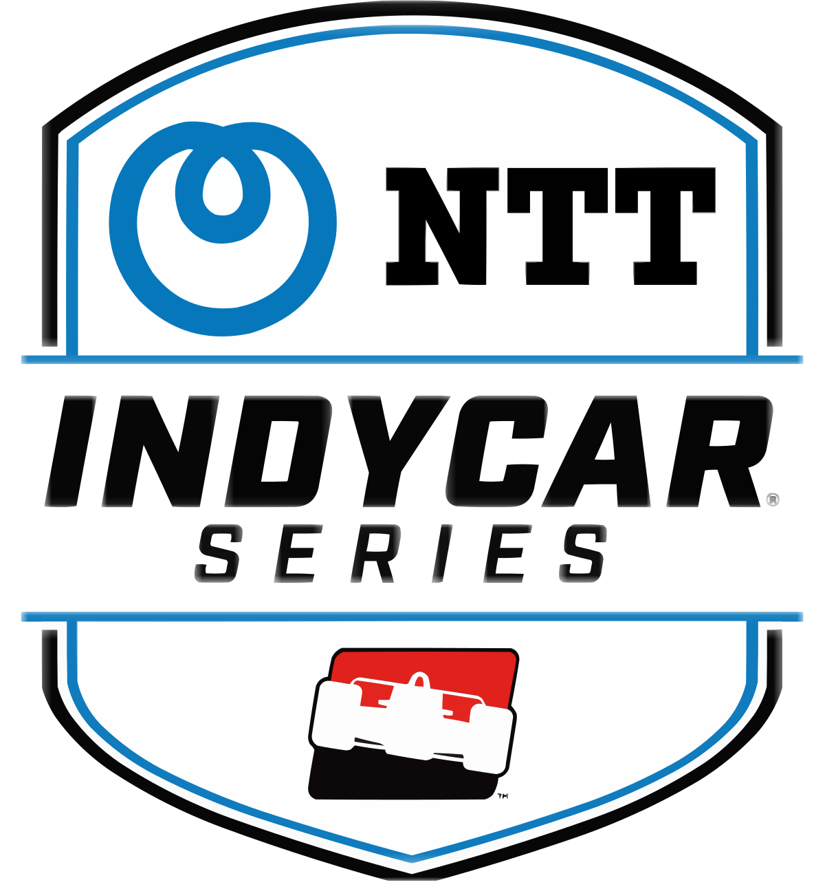

Az Indycar a világ legrégebbi és egyben leggyorsabb autóverseny sorozatának jelenkori leszármazottja. Az NTT IndyCar Series bajnokságban nyitott karosszériájú, együléses, turbófeltöltővel működő belső égésű motor által hajtott autók vehetnek részt, amelyek végsebessége elérheti a 390 km/órát is. A versenysorozat több állomásból áll, melyeket szilárd burkolatú, erre a célra kialakított ovál, vagy épített pályákon, továbbá városokban kialakított ideiglenes pályákon rendeznek. A versenyek csak az USA-ban és Kanadában vannak megrendezve az Indycar még nem járt Amerikán kívűl. A versenyek közül kiemelkedő jelentőségű az Indianapolis 500, melyet 1911 óta, a világháborúkat leszámítva minden évben megrendeznek, 2016-ban pedig már a 100. versenyt rendezték meg. Kasztnit a Dallara szállítja és a motorok közül vagy Honda vagy Chevrolet kerül az autókba. Az abroncsokat a Firestone biztosítja a csapatok számára.
Az amerikai nyílt-kerekes versenyzés története egészen 1902-ig nyúlik vissza, amikor is az első versenyeket szervezték. 1905-ben az American Automobile Association (AAA) szervezésében kiírják az első National Track Championship szezont, amit több verseny alkotott de a versenyeket külön értékelték és összetett bajnokot az első szezont leszámítva amikor is Barney Olfield győzedelmeskedett, nem avattak. 1909-ben felépül az Indianapolis Motor Speedway ami még ebben az évben vendégül látja a National Track Championship-et. 1911-ben megrendezik az első Indianapolis 500-at, amely ezután a bajnokság legfontosabb versenye lesz. 1916-ban az AAA változtatott a bajnokság szerkezetén. Innentől National Championship néven futott a bajnokság és már avattak bajnokot is, és a korábbi szezonokban is utólag bajnokot hirdettek. 1956-tól a helyét a United States Auto Club vette át, amelynek egyik alapító tagja és vezetője volt az Indianapolis Motor Speedway tulajdonosa, Tony Hulman. A bajnokság az ötvenes években komoly fejlődésnek indult, és komoly népszerűségnek örvendett az Egyesült Államokban. A sorozat a 60-as évek közepére olyan sikeres lett világszinten is, hogy az európai Grand Prix versenyzés legjobbjai is gyakori résztvevői voltak a versenyeknek.
Az egységes Dallara kasztni mellett a csapatok választhattak a Honda és a Chevrolet által tervezett aero-csomagok közül is, így azt várták, hogy egy-egy autó között nagyobb lesz a különbség. A nagy balesetekkel tarkított 99. Indy 500-on 15 év elteltével Juan Pablo Montoya diadalmaskodott a Team Penske csapatával. James Hinchcliffe, a Schmidt Peterson Motorsports versenyzője az utolsó IndyCar szabadedzésnapon csaknem végzetes balesetet szenvedett, mikor a falnak csapódás után az egyik felfüggesztés elem átszúrta a versenyző combját, és jelentős mennyiségű vért vesztett. Pocono-ban, a szezon 15. versenyen Justin Wilson súlyos balesetet szenvedett, miután Sage Karam autójának egyik leszakadó első szárnydarabja fejen találta. Másnap végül belehalt fejsérüléseibe. Ezzel a 2011-es szezonzárón elhunyt Dan Wheldon óta ő volt az első, aki életét vesztette egy IndyCar versenyen. A bajnokságot végül Scott Dixon nyerte meg, aki ezzel megszerezte a 4. bajnoki címét az Indy 500 győztes Montoya előtt.
Az Indianapolisi 500 mérföldes versenyt (más néven: Indy 500) 1911 óta rendezik az Indianapolis Motor Speedway versenypályán. Tradicionálisan a háborús hősök emléknapjának (május 30.) hétvégéjén rendezik. A verseny mindig is a legfontosabb versenye volt az amerikai open-wheel versenyzésnek. 1950 és 1960 között beleszámított a FIA versenyzők bajnokságába. Az Indianapolis 500 egyike a világ három legnagyobb versenyének, az egyik legnagyobb egynapos sportesemény a világon. Az 500 mérföldes versenyre általában közel 400 ezren látogatnak el a verseny napján. Ez az a verseny, amit mindenkit érdekel kivéve a médiát. A versenyt a régen az ameriakiak dominálták, de a jelenkor erős nemzetközi mezőny miatt kevés kompetens amerikai van.
Amerikai Indycar pilóta volt. 1961-ben, 1964-ben, 1967-ben és 1977-ben megnyerte az Indy 500-t.
Amerikai Indycar pilóta volt. 1970-ben, 1971-ben, 1978-ban és 1987-ben nyerte meg az Indy 500-t.
Amerikai Indycar pilóta volt. 1979-ben, 1984-ben, 1988-ban és 1991-ben nyerte meg az Indy 500-t.
Brazil pilóta. Jelenleg is aktív pilóta. 2001-ben, 2002-ben, 2009-ben és 2021-ben nyerte meg az Indy 500-t.